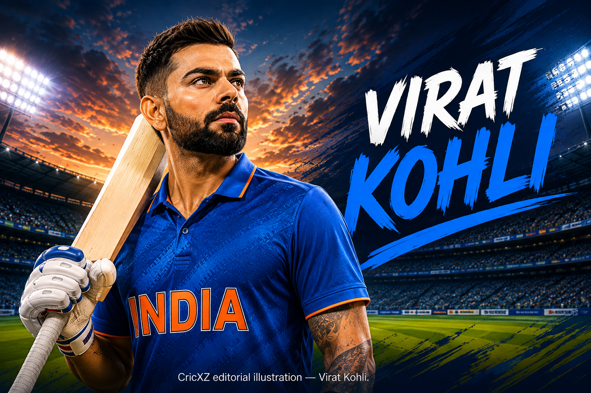

Test
- Matches
- 123
- Innings
- 210
- Not outs
- 13
- Runs
- 9,230
- Highest score
- 254*
- Batting average
- 46.85
- Strike rate
- 55.58
- Hundreds
- 30
- Fifties
- 31
- Fours
- 1,027
- Sixes
- 30

Virat Kohli is an Indian right-hand batter and former India captain. He retired from T20 internationals in 2024 and Test cricket in 2025, while remaining active in ODIs as of 19 July 2026.
Statistics as of: 19 July 2026.
Test and T20I figures are final career totals. ODI figures include matches through 19 July 2026 and may change if Kohli plays again.
Primary career-statistics baseline: BCCI.
As of 19 July 2026, Virat Kohli has played 562 international matches for India across Test, ODI and T20I cricket, scoring 28,359 runs and 85 international centuries.
Kohli has hit 325 sixes in international cricket across the three formats: 30 in Tests, 171 in ODIs and 124 in T20 internationals. His career totals also include 9,230 Test runs, 14,941 ODI runs and 4,188 T20I runs.
His highest international scores are 254 not out in Tests, 183 in ODIs and 122 not out in T20Is. Kohli's Test and T20I career totals are final following his retirement from those formats, while his ODI statistics may change if he plays again.
20 June 2011
Against West Indies at Sabina Park, Kingston, Jamaica.
18 August 2008
Against Sri Lanka at Rangiri Dambulla International Stadium, Dambulla.
12 June 2010
Against Zimbabwe at Harare Sports Club, Harare.
Status as of 19 July 2026. Playing status is separate from the historical captaincy record below.
Retired from Test cricket on 12 May 2025. Career totals are final.
Active as of 19 July 2026. ODI totals remain changeable.
Retired from T20 internationals on 29 June 2024. Career totals are final.
Kohli captained India in 68 Tests and recorded 40 wins; both are India records.
He led India to its first Test-series victory in Australia.
India recorded 65 wins in 95 ODIs under his captaincy.
India recorded 30 wins in 50 T20Is under his captaincy.
As of 19 July 2026, Kohli has 54 ODI centuries.
He became the first batter to reach 50 ODI centuries.
He was named Player of the Tournament at the 2023 ICC Men’s Cricket World Cup.
He scored 765 runs at the 2023 Men’s Cricket World Cup, the single-edition men’s World Cup record.
He was named ICC Men’s ODI Cricketer of the Year for 2023.
He became the third batter to reach 14,000 ODI runs, reaching the milestone in his 298th ODI.
He received the ICC Male Cricketer of the Decade and ICC Men’s ODI Cricketer of the Decade honours.
He was Player of the Tournament at the 2014 and 2016 ICC Men’s T20 World Cups.
He was Player of the Match in the 2024 ICC Men’s T20 World Cup final.